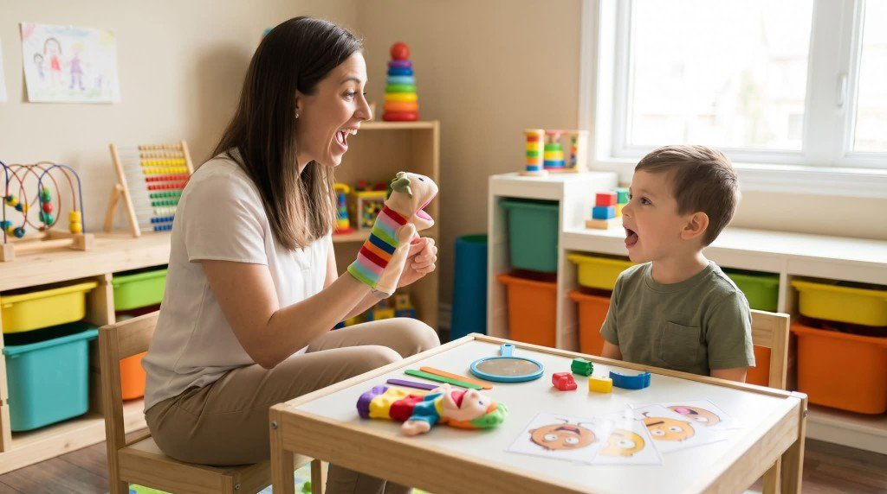

Kai vaiko liežuvio galiukas vis tiek kyla prie alveolių (vyksta veliarinių garsų frontacija) arba vaikas tiesiog „neranda“ savo liežuvio šaknies, žingsnis atgal ir žvilgsnis į motorinę kalbos judesių raidos tvarką gali viską pakeisti.
Prieš mokant paties garso, turime įvertinti bazinius burnos motorikos judesius, kurie yra būtini tam garsui tarti.
Įvertinkite apatinio žandikaulio stabilumą ir gradaciją (pagrindas)
Liežuvio judesių atsiskyrimas (disociacija) priklauso nuo stabilaus žandikaulio. Jei kalbant vaiko žandikaulis slankioja į šonus arba yra nepakankama amplitudė, arba stebimi kompensaciniai judesiai, liežuvio užpakalinė dalis negali savarankiškai pakilti link minkštojo gomurio.
Ką daryti: pirmiausia įvertinkite žandikaulio stabilumą. Naudokite taktilines užuominas arba jaw blocks, kad padėtumėte stabilizuoti žandikaulį prieš prašydami atitraukti liežuvį atgal.
Lavinkite liežuvio ir žandikaulio judesių disociaciją
Motorinių judesių raidos tvarkoje gebėjimas judinti liežuvį nepriklausomai nuo žandikaulio atsiranda anksčiau nei sudėtingas, izoliuotas liežuvio šaknies pakėlimas.
Ką daryti: praktikuokite paprastus liežuvio judesius išlaikydami žandikaulį nejudantį – pavyzdžiui, lengvą gerklės skalavimą (gargaliavimą), kosėjimą pagal komandą arba nedidelio kiekio vandens laikymą burnos gale atlošus galvą.
Pereikite nuo priekinių prie užpakalinių judesių
Daugelis vaikų yra „užstrigę“ priekiniame motoriniame modelyje (viskam naudoja tik liežuvio galiuką).
Ką daryti: pasitelkite gravitaciją ir taktilinį grįžtamąjį ryšį, kad padėtumėte liežuviui atsitraukti atgal. Paprašykite vaiko šiek tiek atsilošti (gulima ar pusiau gulima padėtis), kad gravitacija natūraliai patrauktų liežuvį link minkštojo gomurio, arba švelniai prispauskite liežuvio galiuką žemyn mentele ar ledinuku, kad galėtų pakilti tik užpakalinė liežuvio dalis.
Pirmiausia įtvirtinkite duslųjį /k/, o tik tada – skardųjį /g/
Motoriniu požiūriu balso klosčių virpesių koordinavimas vienu metu su užpakalinės liežuvio dalies pakėlimu sukuria papildomą sudėtingumo lygį.
Ką daryti: pirmiausia tiksliai išgaukite duslų oro srovės sprogimą (/k/) izoliuotai ir paprastuose atviruose skiemenyse (PV). Kai liežuvio padėties motorinis planas taps automatinis, tiesiog „įjunkite balsą“ garsui /g/.
Derinkite taktilines užuominas su tinkamais skiemenimis
Kai tik pavyksta išgauti pirmąjį užpakalinį kontaktą, iš karto įtraukite garsą į koartikuliacinius balsių kontekstus, kurie natūraliai traukia liežuvį atgal – pavyzdžiui, /ka/, /ko/ ar /ku/ – ir tik vėliau pereikite prie priekinės eilės balsių, tokių kaip /ki/.
Gerinkite paties liežuvio „suvokimą“ logopediniu masažu